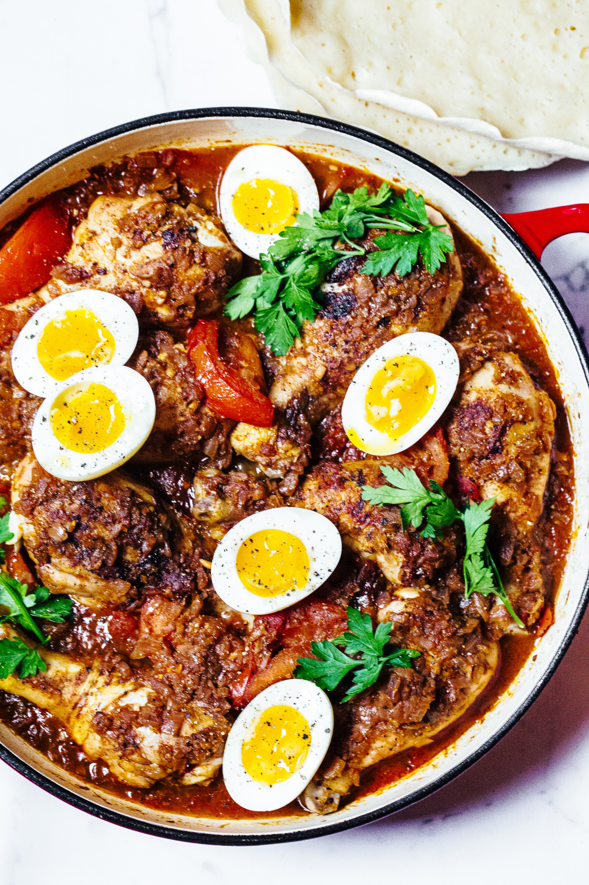
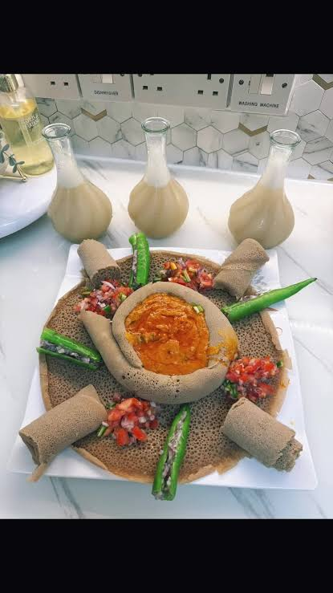
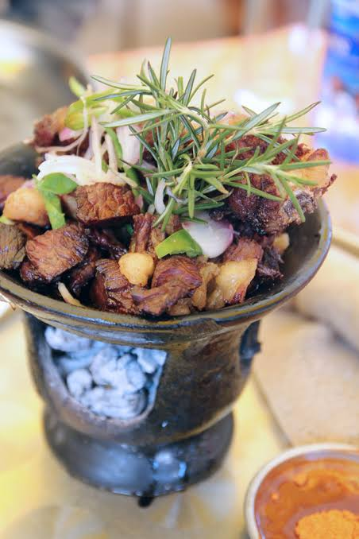
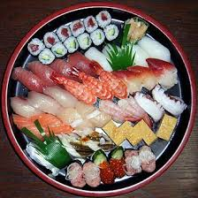

Favorite Food
Tradtional food for I me like
- Doro Wat
- Shiro Wat
- Tibs



Non tradtional food for me I like
- Burger
- Pizza
- Sushi



Game of Thrones is a hit fantasy drama television series on HBO created by David Benioff and D.B. Weiss,
based on George R.R. Martin’s A Song of Ice and Fire novels
Tewodros Kassahun Germamo , known professionally as Teddy Afro, is an Ethiopian singer-songwriter. Considered one of the most significant Ethiopian artists of all time,
he debut his first album titled Abugida in 2001




| Title | Publisher | Genre |
|---|---|---|
| Grand Theft Auto V | Rockstar Games | Action-Adventure |
| Minecraft | Mojang Studios | Sandbox |
| God of War | Sony Interactive Entertainment | Action-Adventure |